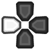
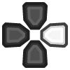

PCSX2 is still under development. The content on this page is not the final version. Connecting a remote while any content is running may cause retroarch crashes. If you get a failed to load content warning, respectively; Check your BIOS, video driver(try to switch between drivers, use 'GL') and content. There’s a working OpenGL renderer and a Direct3D11 renderer option. Direct3D 11 renderer can be faster than OpenGL but also has less features. Pick whichever works best for you. On Xbox you will only be able to use Direct3D11 anyways. This core uses the x86_64 dynarec which was added to PCSX2 a year ago. It is still less compatible than the 32bit x86 dynarec in PCSX2, so keep that in mind. It’s for similar reasons that the software renderer right now won’t work (it’s not compatible yet with x86_64, not in upstream either). There’s a bug that can happen right now upon closing content or exiting RetroArch with the PCSX2 core on Windows – the RetroArch process might not completely cleanly shut itself off and you might still be able to see a 0% CPU process remaining in the Task Manager. We have not been able to figure out how to fix that yet as the PCSX2 codebase is a definite case of ‘here be dragons’, but for now when this happens, you can just bring up the Task Manager and close it manually. It shouldn’t have a real detriment on performance but it is of course far from ideal and hopefully something we can fix soon with the help of some contributors. We have found this happens the most with the Direct3D 11 renderers. Switching resolution at runtime right now can be a bit unstable, so does switching fullscreen resolution. We might just make resolution switching require a restart since this tends to be too unstable for now.
PCSX2 is a PlayStation®2 emulator capable of running commercial games. It's an open source project that runs on Windows, Mac and Linux. Like its predecessor project PCSX, it is based on a PSEmu Pro spec plug-in architecture, separating several functions from the core emulator. PCSX2 requires a copy of the PS2 BIOS, which is not available for download from the developers, due to the copyright concerns and legal issues associated with it.
PCSX2 is a free and open-source PlayStation 2 (PS2) emulator. Its purpose is to emulate the PS2's hardware, using a combination of MIPS CPU Interpreters, Recompilers and a Virtual Machine which manages hardware states and PS2 system memory. This allows you to play PS2 games on your PC, with many additional features and benefits.
PCSX2, supports a wide range of PlayStation 2 video games with a high level of compatibility and functionality. Although PCSX2 can closely mirror the original gameplay experience on the PlayStation 2, PCSX2 supports a number of improvements over gameplay on a traditional PlayStation 2, such as the ability to use custom resolutions up to 8192×8192, anti-aliasing, and texture filtering.
PCSX2 core has been authored by
PCSX2 core is licensed under
A summary of the licenses behind RetroArch and its cores can be found here.
CPU
GPU
RAM
!!! Attention Because of the complex nature of emulation, even if you meet the recommended requirements there will be games that will NOT run at full speed due to emulation imperfection, floating point emulation differences, issues with emulator itself or other problems.
!!! Attention For compatibility reasons, it is recommended to not use a SCPH-10000 BIOS.
!!! Notes
- No specific filename required, as long as the BIOS was properly dumped the core will be able to find it.
- The BIOS files must be extracted, the core will not be able to find them if they're zipped.
- PCSX2 does not implement region locking, so if you have a PAL BIOS you can play NTSC games, and vice versa. However, this only applies with the Fast Boot core option enabled.
PCSX2 requires a BIOS to work, the BIOS can be provided as a single 4MB .bin file or with additional files (usually .erom, .nvm, .rom1 and .rom2).
In case you're having additional files with the .bin, make sure they're sharing the same filename or they'll be ignored.
So as an example let's say you have a SCPH-70004_BIOS_V12_EUR_200.BIN file with an EROM file, a ROM1 file and a ROM2 file, it should look like this:
SCPH-70004_BIOS_V12_EUR_200.BIN
SCPH-70004_BIOS_V12_EUR_200.EROM
SCPH-70004_BIOS_V12_EUR_200.ROM1
SCPH-70004_BIOS_V12_EUR_200.ROM2
retroarch/system/, but if you're not sure check the path in Settings > Directory > System/BIOS).pcsx2 folder.pcsx2 folder and create a bios folder.bios folder and paste your BIOS file(s) here.For example, the default path would look like this: system\pcsx2\bios\[bios_file_name].bin
If you're on a case-sensitive OS, make sure both pcsx2 and bios folders are lowercase.
The file structure should look like this:
retroarch/
└── system/
└── pcsx2/
├── bios/
├── cheats/
├── cheats_ws/
└── memcards/ (optional)
bios/ is where the BIOS files are located (see the 'BIOS' section above), this should be created by the user.cheats/ is where you can store cheat patches, the folder is created on the first boot automatically.cheats_ws/ is where you can store additional widescreen patches, the folder is created on the first boot automatically.memcards/ is where the "legacy" memory cards are stored. This folder is optional, see the 'Directories' section below.!!! Info
Although the cheats_ws folder is empty when created, a very large number of widescreen patches are already included in the core itself.
Content that can be loaded by the PCSX2 core have the following file extensions:
RetroArch database(s) that are associated with the PCSX2 core:
Frontend-level settings or features that the PCSX2 core respects.
| Feature | Supported |
|---|---|
| Restart | ✕ |
| Screenshots | ✔ |
| Saves | ✔ |
| States | ✕ |
| Rewind | ✕ |
| Netplay | ✕ |
| Core Options | ✔ |
| RetroAchievements | ✕ |
| RetroArch Cheats | ✕ |
| Native Cheats | ✔ |
| Controls | ✔ |
| Remapping | ✔ |
| Multi-Mouse | ✕ |
| Rumble | ✔ |
| Sensors | ✕ |
| Camera | ✕ |
| Location | ✕ |
| Subsystem | ✕ |
| Softpatching | ✕ |
| Disk Control | ✕ |
| Username | ✕ |
| Language | ✕ |
| Crop Overscan1 | ✕ |
| LEDs | ✕ |
PCSX2's library name is 'pcsx2'
PCSX2 core saves/loads to/from these directories.
Frontend's Save directory
retroarch/saves/pcsx2/Slot 1/
retroarch/saves/pcsx2/Slot 2/
Frontend's System directory
retroarch/system/pcsx2/memcards/
The legacy memory cards folder is only used if Mcd001.ps2 and/or Mcd002.ps2 is detected in retroarch/system/pcsx2/memcards/ and the "Memory Card: Slot N" core option is set to "Legacy".
This can be useful if you were using an older version of the core that didn't use the saves folder yet, or if you transferred the memcards folder directly from standalone.
Rumble only works in the PCSX2 core when
| User 1 - 8 input descriptors | RetroPad Inputs | PlayStation Controller Inputs | DualShock Inputs | Analog Controller Inputs | Analog Joystick Inputs | neGcon Inputs |
|---|---|---|---|---|---|---|
| Cross |  |
 |
|
|
|
Analog button I |
| Square |  |
Analog button II | ||||
| Select |  |
 |
|
|
|
|
| Start |  |
 |
|
|
|
Start |
| D-Pad Up |  |
 |
|
|
|
D-Pad Up |
| D-Pad Down |  |
 |
|
|
|
D-Pad Down |
| D-Pad Left |  |
 | D-Pad Left | |||
| D-Pad Right |  |
 | D-Pad Right | |||
| Circle |  |
 |
|
|
|
A |
| Triangle |  |
 |
|
|
|
B |
| L1 |  |
 |
|
|
|
Left shoulder button (analog) |
| R1 |  |
 |
|
|
|
Right shoulder button (digital) |
| L2 |  |
 |
|
|
|
Analog button II |
| R2 |  |
 |
|
|
|
Analog button I |
| L3 |  |
|||||
| R3 |  |
 |
||||
| Left Analog X |  X X |
 |
|
Left Joystick X | Twist | |
| Left Analog Y | Y |
|
|
Left Joystick Y | ||
| Right Analog X |  X X |
Right Joystick X | ||||
| Right Analog Y | Y |
Right Joystick Y |
The current standalone development version is reported to be compatible with approximately 97.4% of 2,641 tested games as of August 2020. Compatibility means only that the game will not crash, lock up, or enter a loop; there can still be bugs, missing post-processing effects, textures, and shadows in many compatible games. This is especially the case in hardware mode; a slower software mode is available for bugs without workarounds. You can check compatibilirt list in here
Overscan cropping available via Core Options instead of frontend settings↩